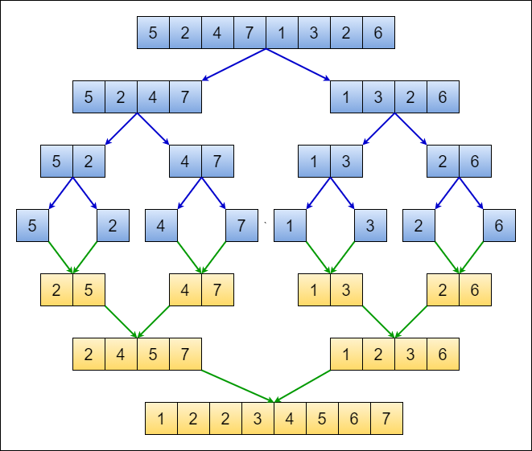
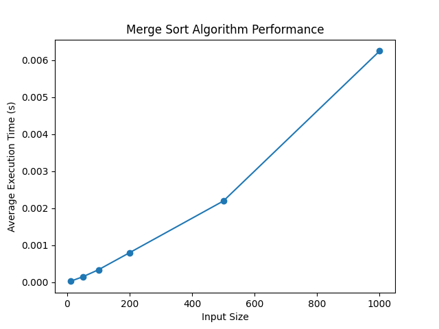
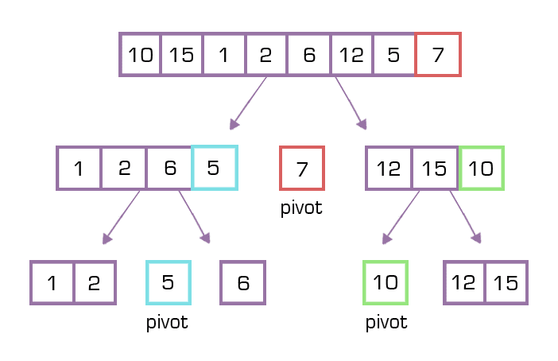
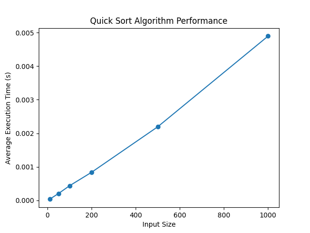
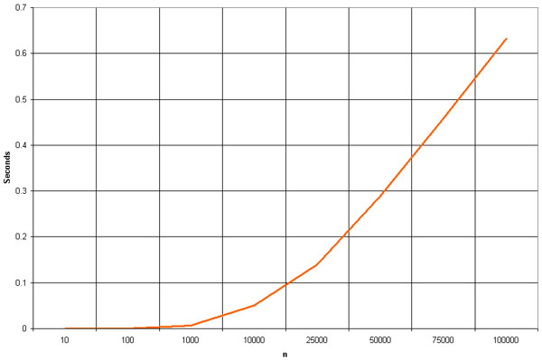

UNIVERSITY OF VISVESVARAYA COLLEGE OF ENGINEERING (UVCE)
K R Circle, Dr Ambedkar Veedhi, Bengaluru, Karnataka 560 001
Laboratory Manual
Design and Analysis of Algorithms
(SUBCODE: 21CCPC402)
(4th semester B.Tech)
Submitted By:
Kartikeya Saini
U03NM21T064023
ISE (B-2 batch)
Under the Guidance of:
Neetha ma’am
DEPARTMENT OF COMPUTER SCIENCE & ENGINEERING
Acknowledgement
I, Kartikeya Saini wish to extend my heartfelt acknowledgment to Neetha ma’am for her pivotal role in the creation of this lab manual. Neetha ma’am's dedicated efforts, insightful contributions, and expert guidance have significantly elevated the quality and educational value of this resource. Her expertise in algorithm design, coupled with a meticulous review process, has been instrumental in shaping a manual that not only meets but exceeds the highest educational standards.
Neetha ma’am's commitment to excellence has not only refined the clarity and coherence of the content but has also fostered a collaborative and enriching learning environment. I am profoundly grateful for the opportunity to work alongside such a dedicated mentor, and I am confident that her contributions will have a lasting impact on the educational experience of students engaging with this manual.
BANGALORE UNIVERSITY
UNIVERSITY OF VISVESVARAYA COLLEGE OF ENGINEERING
K. R. CIRCLE, BENGALURU – 560001
Department of Computer Science and Engineering
CERTIFICATE
This is to certify that, Kartikeya Saini (U03NM21T064023) has satisfactorily completed the course of Experiments in Practical Design And Analysis Of Algorithm , prescribed by Department of CSE, Bangalore University, during the academic year 2022- 23.
Signature of the Teacher Signature of the Examiner
_______________________ _______________________
Date: _______________
Name of the Candidate: Kartikeya Saini
Reg No.: U03NM21T064023
Examination Centre: UVCE
Index
Sl.No | Index | Page NO. |
| Introduction |
|
1 | Sort a given set of elements using Merge sort and determine the time required to sort the elements. Repeat the experiment for different values of n, the number of elements in the list to be sorted and plot graph of the time taken versus number of elements. The elements can be read from file or generated using random number generator | 7 |
2 | Sort a given set of elements using Quick sort and determine the time required to sort the elements. Repeat the experiment for different values of n, the number of elements in the list to be sorted and plot graph of the time taken versus number of elements. The elements can be read from a file or generated using a random number generator. | 11 |
3 | Write a program to perform insert and delete operations in Binary Search Tree | 14 |
4 | Print all the nodes reachable from a given starting node in a digraph using the BFS method. | 17 |
5 | Obtain the topological ordering of vertices in a given digraph | 19 |
6 | Compute the transitive closure of a given directed graph using Warshall’s algorithm | 21 |
7 | Sort a given set of elements using the Heap sort method and determine the time required to sort the elements. Repeat the experiment for different values of n, the number of elements in the list to be sorted and plot a graph of the time taken versus number of elements. | 23 |
8 | Search for a pattern string in a given text using Horspool String Matching algorithm. | 26 |
9 | Implement 0/1 Knapsack problem using dynamic programming | 28 |
10 | Find Minimum Cost Spanning Tree of a given undirected graph using Prim’s algorithm. | 31 |
11 | Find Minimum Cost Spanning Tree of a given undirected graph using Kruskal's algorithm. | 33 |
12 | From a given vertex in a weighted connected graph, find shortest paths to other vertices using Dijkstra's algorithm. | 35 |
13 | Write a program to solve Travelling SalesPerson problem using dynamic programming approach. | 38 |
14 | Implement N Queens’ problem using Backtracking. | 42 |
15 | Find a subset of a given set S={S1,S2,…,Sn} of n positive integers whose SUM is equal to a given positive integer d | 45 |
INTRODUCTION
An algorithm is a set of steps of operations to solve a problem performing calculation, data processing, and automated reasoning tasks.It is an efficient method that can be expressed within a finite amount of time and space. Design and Analysis of Algorithms is very important for designing algorithms to solve different types of problems in the branch of computer science and information technology.
Algorithm Design
The important aspects of algorithm design include creating an efficient algorithm to solve a problem in an efficient way using minimum time and space. To solve a problem, different approaches can be followed. Some of them can be efficient with respect to time consumption, whereas other approaches may be memory efficient. However, one has to keep in mind that both time consumption and memory usage cannot be optimised simultaneously. If we require an algorithm to run in less time, we have to invest in more memory and if we require an algorithm to run with lesser memory, we need to have more time.
Characteristics of Algorithms
- The main characteristics of algorithms are as follows –
- Algorithms must have a unique name
- Algorithms should have explicitly defined set of inputs and outputs
- Algorithms are well-ordered with unambiguous operations
- Algorithms halt in a finite amount of time.
- Algorithms should not run for infinity, i.e., an algorithm must end at some point.
Design and Analysis of Algorithms
In theoretical analysis of algorithms, it is common to estimate their complexity in the asymptotic sense, i.e., to estimate the complexity function for arbitrarily large input. The term "analysis of algorithms" was coined by Donald Knuth. Donald Knuth once said “A person well-trained in computer science knows how to deal with algorithms: how to construct them, manipulate them, understand them, analyse them.” Algorithm analysis is an important part of computational complexity theory, which provides theoretical estimation for the required resources of an algorithm to solve a specific computational problem. Most algorithms are designed to work with inputs of arbitrary length. Analysis of algorithms is the determination of the amount of time and space resources required to execute it. Usually, the efficiency or running time of an algorithm is stated as a function relating the input length to the number of steps, known as time complexity, or volume of memory, known as space complexity.
The Need for Analysis
By considering an algorithm for a specific problem, we can begin to develop pattern recognition so that similar types of problems can be solved by the help of this algorithm. Algorithms are often quite different from one another, though the objective of these algorithms are the same. For example, we know that a set of numbers can be sorted using different algorithms. Number of comparisons performed by one algorithm may vary with others for the same input. Hence, time complexity of those algorithms may differ. At the same time, we need to calculate the memory space required by each algorithm. Analysis of an algorithm is the process of analysing the problem solving capability of the algorithm in terms of the time and size required (the size of memory for storage while implementation). However, the main concern of analysis of algorithms is the required time or performance. Generally, we perform the following types of analysis
Worst-case − The maximum number of steps taken on any instance of size a.
Best-case − The minimum number of steps taken on any instance of size a.
Average case − An average number of steps taken on any instance of size a
1. Sort a given set of elements using Merge sort and determine the time required to sort the elements. Repeat the experiment for different values of n, the number of elements in the list to be sorted and plot graph of the time taken versus number of elements.
Merge Sort is a widely used comparison-based sorting algorithm that follows the divide-and-conquer paradigm. The algorithm divides the unsorted list into two halves recursively until each sublist consists of only one element. Then, it merges these sublists in a sorted manner. The key step is the merge operation, where two sorted sublists are combined to form a single sorted list.
Merge Sort is known for its stability, meaning that the relative order of equal elements remains unchanged. It has a time complexity of O(n log n) for the worst, average, and best cases, making it efficient for large datasets. Additionally, Merge Sort is often preferred for its predictable performance and adaptability to linked lists. Despite its relatively higher space complexity due to the auxiliary arrays used during merging.

Program
import java.util.Scanner;
import java.util.Random;
public class MergeSortExp {
public static void mergeSort(int[] a, int low, int high) {
int N = high - low;
if (N <= 1)
return;
int mid = low + (N / 2);
mergeSort(a, low, mid);
mergeSort(a, mid, high);
int[] temp = new int[N];
int i = low, j = mid;
for (int k = 0; k < N; k++) {
if (i == mid)
temp[k] = a[j++];
else if (j == high)
temp[k] = a[i++];
else if (a[j] < a[i])
temp[k] = a[j++];
else
temp[k] = a[i++];
}
for (int k = 0; k < N; k++)
a[low++] = temp[k];
}
public static void main(String[] args) {
Scanner scan = new Scanner(System.in);
int i;
Random r = new Random();
System.out.println("Merge Sort\nEnter the Number of times the algorithm should Run");
int times = scan.nextInt();
double totaldur = 0;
for (int j = 0; j < times; j++) {
System.out.println("Random Number Generated are at POS " + j + " as follows : ");
int[] a = new int[10];
for (i = 0; i < 10; i++) {
a[i] = r.nextInt(1000);
System.out.print(a[i] + " ");
}
System.out.println("");
long StartTime = System.nanoTime();
mergeSort(a, 0, 10);
double EndTime = System.nanoTime();
double duration = (EndTime - StartTime);
System.out.println("Elements after Sorting are");
for (i = 0; i < 10; i++)
System.out.print(a[i] + " ");
System.out.println(""); totaldur = totaldur + duration;
}
System.out.println("\nTotal time taken to Sort is :" + totaldur + " Nano Seconds");
double miliseconds = (totaldur / 1000000);
System.out.println("\nTotal time taken to Sort is :" + miliseconds + "Mili Seconds");
double avg = totaldur / times;
System.out.println("The Average time Spend by the System is : " + avg + " Nano Second");
double miliavg = (avg / 1000000);
System.out.println("The Avergae time Spend by the System is : " + miliavg + " Mili Seconds");
scan.close();
}
} |
Output
Merge Sort
Enter the Number of times the algorithm should Run: 5
Random Number Generated are at POS 0 as follows :
534 861 7 563 12 937 70 454 834 551
Elements after Sorting are
7 12 70 454 534 551 563 834 861 937
Random Number Generated are at POS 1 as follows :
904 585 782 420 450 292 889 886 716 157
Elements after Sorting are
157 292 420 450 585 716 782 886 889 904
Random Number Generated are at POS 2 as follows :
695 163 390 543 668 317 962 852 290 316
Elements after Sorting are
163 290 316 317 390 543 668 695 852 962
Random Number Generated are at POS 3 as follows :
999 612 96 616 350 914 308 954 309 15
Elements after Sorting are
15 96 308 309 350 612 616 914 954 999
Random Number Generated are at POS 4 as follows :
624 510 232 742 946 824 624 459 590 495
Elements after Sorting are
232 459 495 510 590 624 624 742 824 946
Total time taken to Sort is :83700.0 Nano Seconds
Total time taken to Sort is :0.0837Mili Seconds
The Average time Spent by the System is : 16740.0 Nano Second
The Avergae time Spent by the System is : 0.01674 Mili Seconds |
Graph:

2. Sort a given set of elements using Quick sort and determine the time required to sort the elements. Repeat the experiment for different values of n, the number of elements in the list to be sorted and plot graph of the time taken versus number of elements.
The elements can be read from a file or generated using a random number generator. Quicksort is the other important sorting algorithm that is based on the divide-and-conquer approach.
Unlike mergesort, which divides its input elements according to their position in the array, quicksort divides them according to their value.

Program
import java.util.Random;
import java.util.Scanner;
public class QuickSort {
static int max = 2000;
int partition(int[] a, int low, int high) {
int p, i, j, temp;
p = a[low];
i = low + 1;
j = high;
while (low < high) {
while (a[i] <= p && i < high)
i++;
while (a[j] > p)
j--;
if (i < j) {
temp = a[i];
a[i] = a[j];
a[j] = temp;
} else {
temp = a[low];
a[low] = a[j];
a[j] = temp;
return j;
}
}
return j;
}
void sort(int[] a, int low, int high) {
if (low < high) {
int s = partition(a, low, high);
sort(a, low, s - 1);
sort(a, s + 1, high);
}
}
public static void main(String[] args) {
System.out.println("Enter the array size");
try (Scanner scan = new Scanner(System.in)) {
int n = scan.nextInt();
int[] a = new int[max];
Random r = new Random();
for (int i = 0; i < n; i++)
a[i] = r.nextInt(20);
System.out.println("Array before sorting");
for (int i = 0; i < n; i++)
System.out.print(a[i] + " ");
long startTime = System.nanoTime();
QuickSort m = new QuickSort();
m.sort(a, 0, n-1);
long stopTime = System.nanoTime();
long elapseTime = (stopTime - startTime);
System.out.println("\nTime taken to sort array is:" + elapseTime + "nanoseconds");
System.out.println("Sorted array is");
for (int i = 0; i < n; i++)
System.out.print(a[i]+" ");
scan.close();
}
}
} |
Output:
Enter Enter the array size
10
Array before sorting
6 5 19 8 10 2 6 1 12 6
Time taken to sort array is:19600 nanoseconds
Sorted array is
1 2 5 6 6 6 8 10 12 19 |
Graph:
3. Perform insert and delete operations in Binary Search Tree
A Binary Search Tree (BST) is a hierarchical data structure where each node has at most two children: a left child with a value less than the node and a right child with a value greater than the node. This ordering property is maintained throughout the tree, making search, insert, and delete operations efficient with an average time complexity of O(log n), where n is the number of nodes. The left and right subtrees of every node are also BSTs, ensuring sorted access to the elements. These properties facilitate fast searching and manipulation of data in a self-balancing binary tree structure.
class BinarySearchTree {
static class Node {
int data;
Node left, right;
public Node(int item) {
data = item;
left = right = null;
}
}
Node root;
BinarySearchTree() {
root = null;
}
void insert(int data) {
root = insertRec(root, data);
}
Node insertRec(Node root, int data) {
if (root == null) {
root = new Node(data);
return root;
}
if (data < root.data) {
root.left = insertRec(root.left, data);
} else if (data > root.data) {
root.right = insertRec(root.right, data);
}
return root;
}
void delete(int data) {
root = deleteRec(root, data);
}
Node deleteRec(Node root, int data) {
if (root == null) {
return root;
}
if (data < root.data) {
root.left = deleteRec(root.left, data);
} else if (data > root.data) {
root.right = deleteRec(root.right, data);
} else {
if (root.left == null) {
return root.right;
} else if (root.right == null) {
return root.left;
}
root.data = minValue(root.right);
root.right = deleteRec(root.right, root.data);
}
return root;
}
int minValue(Node root) {
int minValue = root.data;
while (root.left != null) {
minValue = root.left.data;
root = root.left;
}
return minValue;
}
void inorder() {
inorderRec(root);
}
void inorderRec(Node root) {
if (root != null) {
inorderRec(root.left);
System.out.print(root.data + " ");
inorderRec(root.right);
}
}
public static void main(String[] args) {
BinarySearchTree tree = new BinarySearchTree();
tree.insert(50);
tree.insert(30);
tree.insert(20);
tree.insert(40);
tree.insert(70);
tree.insert(60);
tree.insert(80);
System.out.println("Inorder traversal:");
tree.inorder();
System.out.println();
System.out.println("Delete 20:");
tree.delete(20);
tree.inorder();
System.out.println();
System.out.println("Delete 30:");
tree.delete(30);
tree.inorder();
System.out.println();
}
}
|
Output
Inorder traversal:
20 30 40 50 60 70 80
Delete 20:
30 40 50 60 70 80
Delete 30:
40 50 60 70 80 |
4. Print all the nodes reachable from a given starting node in a digraph using the BFS method.
Breadth-First Search (BFS) is a graph traversal algorithm that explores vertices level by level, visiting all neighbours of a node before moving on to the next level. Starting from the initial node, BFS systematically explores all reachable nodes, employing a queue to maintain the order of exploration. It ensures the shortest path is discovered first, making it ideal for finding the shortest path in unweighted graphs. BFS is complete and guarantees optimality when searching for a solution in a graph with uniform edge costs. Its time complexity is O(V + E), where V is the number of vertices and E is the number of edges in the graph.
import java.util.LinkedList;
import java.util.Queue;
import java.util.Scanner;
public class BFSDirectedGraph {
public static void main(String[] args) {
Scanner scanner = new Scanner(System.in);
System.out.print("Enter the number of vertices: ");
int vertices = scanner.nextInt();
int[][] adjacencyMatrix = new int[vertices][vertices];
System.out.println("Enter the adjacency matrix:");
for (int i = 0; i < vertices; i++) {
for (int j = 0; j < vertices; j++) {
adjacencyMatrix[i][j] = scanner.nextInt();
}
}
System.out.print("Enter the starting vertex: ");
int startVertex = scanner.nextInt();
System.out.println("BFS traversal starting from vertex " + startVertex + ":");
bfs(adjacencyMatrix, startVertex, vertices);
scanner.close();
}
private static void bfs(int[][] adjacencyMatrix, int startVertex, int vertices) {
boolean[] visited = new boolean[vertices];
Queue<Integer> queue = new LinkedList<>();
visited[startVertex] = true;
queue.add(startVertex);
while (!queue.isEmpty()) {
int currentVertex = queue.poll();
System.out.print(currentVertex + " ");
for (int i = 0; i < vertices; i++) {
if (!visited[i]) {
visited[i] = true;
queue.add(i);
}
}
}
}
} |
Output:
Enter the number of vertices:
5
Enter the adjacency matrix:
6 5 19 8 10 2 6 1 12 6
0 1 1 0 0
1 0 0 1 1
1 0 0 0 1
0 1 0 0 1
0 1 1 1 0
Enter the starting vertex: 0
BFS traversal starting from vertex 0:
0 1 2 3 4 |
5. Obtain Topological ordering of the vertices in a given digraph.
Topological Sorting is an algorithm used for directed acyclic graphs (DAGs) to linearly order the vertices such that for every directed edge (u, v), vertex u comes before v in the ordering. The algorithm utilises depth-first search (DFS) to traverse the graph and assigns a topological order to each vertex. Topological sorting is applicable only to DAGs, as cyclic dependencies are not allowed. The time complexity of the algorithm is O(V + E), where V is the number of vertices, and E is the number of edges. It finds applications in task scheduling, dependency resolution, and compiler optimization.
import java.util.*;
public class TopologicalSort {
private int V; // Number of vertices
private List<Integer> adjList[];
public TopologicalSort(int v) {
V = v;
adjList = new LinkedList[v];
for (int i = 0; i < v; ++i)
adjList[i] = new LinkedList<>();
}
// Function to add an edge to the graph
private void addEdge(int v, int w) {
adjList[v].add(w);
}
// Recursive function to perform topological sort
private void topologicalSortUtil(int v, boolean visited[], Stack<Integer> stack) {
visited[v] = true;
for (Integer neighbor : adjList[v]) {
if (!visited[neighbor])
topologicalSortUtil(neighbor, visited, stack);
}
stack.push(v);
}
// Function to perform topological sort
private void topologicalSort() {
Stack<Integer> stack = new Stack<>();
boolean visited[] = new boolean[V];
Arrays.fill(visited, false);
for (int i = 0; i < V; ++i) {
if (!visited[i])
topologicalSortUtil(i, visited, stack);
}
// Print the topological order
System.out.println("Topological Sort:");
while (!stack.isEmpty())
System.out.print(stack.pop() + " ");
}
public static void main(String args[]) {
Scanner scanner = new Scanner(System.in);
// Taking input for the number of vertices
System.out.print("Enter the number of vertices: ");
int V = scanner.nextInt();
TopologicalSort g = new TopologicalSort(V);
// Taking input for the adjacency matrix
System.out.println("Enter the adjacency matrix:");
for (int i = 0; i < V; i++) {
for (int j = 0; j < V; j++) {
if (scanner.nextInt() == 1) {
g.addEdge(i, j);
}
}
}
g.topologicalSort();
scanner.close();
}
} |
Output:
Enter the number of vertices: 4
Enter the adjacency matrix:
0 1 0 0
0 0 1 0
0 0 0 1
0 0 0 0
Topological Sort:
0 1 2 3 |
6. Compute the Transitive closure of a given directed graph using Warshall's Algorithm.
Warshall's Algorithm, also known as the Floyd-Warshall Algorithm, is used for finding the transitive closure of a directed graph. It computes the shortest paths between all pairs of vertices in a graph, taking into account both direct and indirect paths. The algorithm utilises dynamic programming and iteratively updates the shortest path matrix. It works for both positive and negative edge weights but does not handle negative cycles. The time complexity of Warshall's Algorithm is O(V^3), where V is the number of vertices. It is particularly useful for scenarios like network routing and determining reachability in a directed graph.
import java.util.Scanner;
public class Warshall_Transitive_Closure {
public static void main(String[] args) {
Scanner scanner = new Scanner(System.in);
System.out.print("Enter the number of vertices: ");
int vertices = scanner.nextInt();
int[][] adj = new int[vertices][vertices];
System.out.println("Enter the adj matrix: ");
for(int i = 0; i < vertices; i++){
for(int j = 0; j < vertices; j++){
adj[i][j] = scanner.nextInt();
}
}
/* O(N^3) -> Time complexity */
for(int k = 0; k < vertices; k++){
int[][] temp = new int[vertices][vertices];
for (int i = 0; i < vertices; i++) {
for (int j = 0; j < vertices; j++) {
temp[i][j] = adj[i][j] | (adj[i][k] & adj[k][j]);
}
}
// Update the original matrix with the temporary matrix
for (int i = 0; i < vertices; i++) {
for (int j = 0; j < vertices; j++) {
adj[i][j] = temp[i][j];
}
}
}
System.out.println("The transitive closure is below: ");
for(int i = 0; i < vertices; i++){
for(int j = 0; j < vertices; j++){
System.out.print(adj[i][j] + " ");
}
System.out.println();
}
}
} |
Output:
Enter the number of vertices:
Enter the adj matrix (0 for no edge, 1 for edge):
0 1 0 1
0 0 1 0
0 0 0 1
0 0 0 0
The transitive closure is below: 1 1 1 1
0 0 1 1
0 0 0 1
0 0 0 0 |
7. Sort a given set of elements using the Heap sort method and determine the time required to sort the elements. Repeat the experiment for different values of n, the number of elements in the list to be sorted and plot a graph of the time taken versus number of elements.
Heap Sort is a comparison-based sorting algorithm that builds a max-heap from the given array, then repeatedly extracts the maximum element (root of the heap) and swaps it with the last element. The heap size is reduced, and the heap property is maintained through the heapify operation. This process continues until the entire array is sorted. The algorithm has a time complexity of O(n log n), making it efficient for large datasets.
import java.util.*;
public class HeapSort {
public static void main(String[] args) {
Scanner scanner = new Scanner(System.in);
System.out.print("Enter the number of elements: ");
int size = scanner.nextInt();
int[] arr = new int[size];
System.out.println("Enter the elements:");
for (int i = 0; i < size; i++) {
arr[i] = scanner.nextInt();
}
System.out.println("Original array: " + Arrays.toString(arr));
long startTime = System.nanoTime();
heapSort(arr);
long endTime = System.nanoTime();
System.out.println("Sorted array: " + Arrays.toString(arr));
long duration = endTime - startTime;
System.out.println("Time taken for sorting: " + duration + " nanoseconds");
}
public static void heapSort(int[] arr) {
int n = arr.length;
// Build heap (rearrange array)
for (int i = n / 2 - 1; i >= 0; i--) {
heapify(arr, n, i);
}
// One by one extract an element from the heap
for (int i = n - 1; i > 0; i--) {
// Move current root to the end
int temp = arr[0];
arr[0] = arr[i];
arr[i] = temp;
// Call max heapify on the reduced heap
heapify(arr, i, 0);
}
}
public static void heapify(int[] arr, int n, int i) {
int largest = i; // Initialize largest as root
int left = 2 * i + 1; // left = 2*i + 1
int right = 2 * i + 2; // right = 2*i + 2
// If left child is larger than root
if (left < n && arr[left] > arr[largest]) {
largest = left;
}
// If right child is larger than largest so far
if (right < n && arr[right] > arr[largest]) {
largest = right;
}
// If largest is not root
if (largest != i) {
int swap = arr[i];
arr[i] = arr[largest];
arr[largest] = swap;
// Recursively heapify the affected sub-tree
heapify(arr, n, largest);
}
}
} |
|
Output:
Enter the number of elements: 6
Enter the elements:
12 11 13 5 6 7
Original array: [12, 11, 13, 5, 6, 7]
Sorted array: [5, 6, 7, 11, 12, 13]
Time taken for sorting: 13594 nanoseconds |
Graph: (input size N - Number of elements in array v/s Time (in seconds)

8. Search for a pattern string in a given text using Horspool String Matching algorithm
Horspool String Matching algorithm is a technique used to efficiently search for a pattern string within a given text . It operates by pre-computing a shift table based on characters in the pattern to determine the maximum possible shift when a mismatch occurs during the search process. This shift table helps in shifting unnecessary comparisons , optimising the search
import java.util.Scanner;
public class HorspoolStringMatching {
public static int[] shiftTable(String pattern) {
int[] table = new int[256];
int m = pattern.length();
for (int i = 0; i < 256; i++) {
table[i] = m;
}
for (int i = 0; i < m - 1; i++) {
table[pattern.charAt(i)] = m - 1 - i;
}
return table;
int i = m - 1; while (i < n) {
int k = 0;
while (k < m && pattern.charAt(m - 1 - k) == text.charAt(i - k)) {
K++;
}
if (k == m) {
return i - m + 1; // Pattern found at index i - m + 1
} else {
i += table[text.charAt(i)];
}
}
return -1; // Pattern not found
}
public static void main(String[] args)
{
Scanner scanner = new Scanner(System.in);
System.out.print("Enter the text: "); String text = scanner.nextLine();
System.out.print("Enter the pattern to search for: ");
String pattern = scanner.nextLine();
long startTime = System.nanoTime();
int index = horspoolSearch(text, pattern);
long endTime = System.nanoTime();
if (index != -1)
{
System.out.println("Pattern found at index: " + index);
}
else {
System.out.println("Pattern not found.");
}
double timeElapsed = (endTime - startTime) / 1e6; // Convert nanoseconds to milliseconds
System.out.println("Time complexity: " + timeElapsed + " milliseconds");
scanner.close();
} |
Output:
Enter the text: hello my name is priyanka
Enter the pattern to search for: priyanka
Pattern found at index: 17
Time complexity: 0.0322 milliseconds
|
9. Implement 0/1 Knapsack Problem using Dynamic Programming
The 0/1 Knapsack Problem is a fundamental optimization challenge addressed through dynamic programming. In this problem, a set of items, each with a specific weight and value, must be selectively included in a knapsack with a given capacity to maximise the total value. The "0/1" aspect denotes the binary decision for each item—either it is entirely included or excluded. Dynamic programming offers an efficient solution strategy, involving the creation of a table to store optimal solutions for subproblems. By systematically filling this table, the algorithm builds up to the optimal solution, avoiding redundant computations and showcasing the versatility of dynamic programming in solving real-world resource allocation and optimization dilemmas.
import java.util.Scanner;
public class KnapsackDP {
public static int knapsack(int[] weights, int[] values, int capacity) {
int n = weights.length;
int[][] dp = new int[n + 1][capacity + 1];
for (int i = 0; i <= n; i++) {
for (int w = 0; w <= capacity; w++) {
if (i == 0 || w == 0) {
dp[i][w] = 0;
}
else if (weights[i - 1] <= w) {
dp[i][w] = Math.max(values[i - 1] + dp[i - 1][w - . dp[i - 1][w]); } else {
dp[i][w] = dp[i - 1][w];
}
}
}
displayMatrix(dp);
return dp[n][capacity];
}
public static void displayMatrix(int[][] matrix) {
for (int i = 0; i < matrix.length; i++) {
for (int j = 0; j < matrix[i].length; j++) {
System.out.print(matrix[i][j] + " ");
}
System.out.println();
}
}
public static void main(String[] args) {
Scanner scanner = new Scanner(System.in);
System.out.print("Enter the number of items: ");
int n = scanner.nextInt();
int[] weights = new int[n];
int[] values = new int[n];
System.out.println("Enter the weights of the items:");
for (int i = 0; i < n; i++) {
weights[i] = scanner.nextInt();
}
System.out.println("Enter the values of the items:");
for (int i = 0; i < n; i++) {
values[i] = scanner.nextInt();
}
System.out.print("Enter the knapsack capacity: ");
int capacity = scanner.nextInt();
System.out.println("Dynamic Programming Matrix:");
int maxValue = knapsack(weights, values, capacity);
System.out.println("Maximum value: " + maxValue);
scanner.close();
}
}
|
Output:
Enter the number of items: 3
Enter the weights of the items: 1 2 3
Enter the values of the items: 10 12 14
Enter the knapsack capacity: 5
Dynamic Programming Matrix:
0 0 0 0 0 0
0 10 10 10 10 10
0 10 12 22 22 22
0 10 12 22 24 26
Maximum value: 26 |
10. Prim's algorithm. Implement the program in Java language.
Prim's algorithm is a fundamental algorithm in graph theory used for finding the minimum spanning tree of a connected, undirected graph with weighted edges. The algorithm begins by selecting an arbitrary node as the starting point and then iteratively grows the spanning tree by adding the shortest edge that connects a vertex in the tree to a vertex outside the tree. This process continues until all vertices are included in the spanning tree. The resulting tree has the minimum possible total edge weight among all spanning trees of the graph. Implementing Prim's algorithm in Java involves maintaining data structures like priority queues or min-heaps to efficiently select the minimum-weight edges at each step. The Java implementation should effectively represent the graph, manage the edges, and provide a clear and concise solution for computing the minimum spanning tree. Efficiently handling data structures and ensuring proper edge selection are crucial aspects of a successful implementation.
import java.util.Scanner;
public class prims {
public static void main(String[] args) {
int w[][]=new int[10][10];
int n,i,j,s,k=0;
int min;
int sum=0;
int u=0,v=0;
int flag=0;
int sol[]=new int[10];
System.out.println("Enter the number of vertices");
Scanner sc=new Scanner(System.in);
n=sc.nextInt();
for(i=1;i<=n;i++)
sol[i]=0;
System.out.println("Enter the weighted graph");
for(i=1;i<=n;i++)
for(j=1;j<=n;j++)
w[i][j]=sc.nextInt();
System.out.println("Enter the source vertex");
s=sc.nextInt();
sol[s]=1;
k=1;
while (k<=n-1)
{
min=99;
for(i=1;i<=n;i++)
for(j=1;j<=n;j++)
if(sol[i]==1&&sol[j]==0)
if(i!=j && min>w[i][j])
{
min=w[i][j];
u=i;
v=j;
}
sol[v]=1;
sum=sum+min;
k++;
System.out.println(u+"->"+v+"="+min);
}
for(i=1;i<=n;i++)
if(sol[i]==0)
flag=1;
if(flag==1)
System.out.println("No spanning tree");
else
System.out.println("The cost of minimum spanning tree is"+sum);
sc.close();
}
}
|
Output:
Enter the number of vertices
6
Enter the weighted graph
0 3 99 99 6 5
3 0 1 99 99 4
99 1 0 6 99 4
99 99 6 0 8 5
6 99 99 8 0 2
5 4 4 5 2 0
Enter the source vertex
1
1->2=3
2->3=1
2->6=4
6->5=2
6->4=5
The cost of minimum spanning tree is15 |
11. Find Minimum Cost Spanning Tree of a given undirected graph using Kruskal's algorithm
Kruskal's algorithm is a widely used method for finding the Minimum Cost Spanning Tree (MCST) of an undirected graph. The primary objective of this algorithm is to connect all vertices of the given graph with the minimum possible total edge weight, ensuring that a tree is formed without any cycles. The algorithm starts by sorting all the edges of the graph in ascending order based on their weights. It then iteratively selects the smallest edge that does not form a cycle when added to the growing spanning tree. This process continues until all vertices are included in the tree, resulting in an optimal solution that minimizes the overall edge weights. Kruskal's algorithm is efficient, particularly for sparse graphs, and its simplicity makes it a popular choice for solving minimum spanning tree problems in various applications, such as network design and optimization.
import java.util.Scanner;
public class kruskal {
int parent[]=new int[10];
int find(int m){
int p=m;
while(parent[p]!=0)
p=parent[p];
return p;
}
void union(int i,int j)
{
if(i<j)
parent[i]=j;
else
parent[j]=i;
}
void krkl(int[][]a, int n)
{
int u=0,v=0,min,k=0,i,j,sum=0;
while(k<n-1)
{
min=99;
for(i=1;i<=n;i++)
for(j=1;j<=n;j++)
if(a[i][j]<min&&i!=j)
{
min=a[i][j];
u=i;
v=j;
}
i=find(u);
j=find(v);
if(i!=j)
{
union(i,j);
System.out.println("("+u+","+v+")"+"="+a[u][v]);
sum=sum+a[u][v];
k++;
}
a[u][v]=a[v][u]=99;
}
System.out.println("The cost of minimum spanning tree = "+sum);
}
public static void main(String[] args) {
int a[][]=new int[10][10];
int i,j;
System.out.println("Enter the number of vertices of the graph");
Scanner sc=new Scanner(System.in);
int n;
n=sc.nextInt();
System.out.println("Enter the wieghted matrix");
for(i=1;i<=n;i++)
for(j=1;j<=n;j++)
a[i][j]=sc.nextInt();
kruskal k=new kruskal();
k.krkl(a,n);
sc.close();
}
} |
Output:
Enter the number of vertices of the graph
6
Enter the wieghted matrix
0 3 99 99 6 5
3 0 1 99 99 4
99 1 0 6 99 4
99 99 6 0 8 5
6 99 99 8 0 2
5 4 4 5 2 0
(2,3)=1
(5,6)=2
(1,2)=3
(2,6)=4
(4,6)=5
The cost of minimum spanning tree = 15 |
12. From a given vertex in a weighted connected graph, find shortest paths to other vertices using Dijkstra's algorithm.
In the context of graph theory, the problem statement revolves around employing Dijkstra's algorithm to determine the shortest paths from a specified starting vertex to all other vertices in a connected graph with weighted edges. Dijkstra's algorithm, a fundamental and widely used algorithm in the realm of computer science and network routing, efficiently calculates the minimum distance from the source vertex to every other vertex by iteratively exploring the neighbouring nodes and updating the distance values. The weighted connected graph signifies that each edge connecting the vertices possesses a numerical weight, representing the cost or distance between the linked vertices. The objective is to unveil the most optimal paths, considering the cumulative weights, from the given origin to all other vertices, thereby facilitating a comprehensive understanding of the shortest routes within the network.
import java.util.Scanner;
public class Dijkstra {
int d[]=new int[10];
int p[]=new int[10];
int visited[]=new int[10];
public void dijk(int[][]a, int s, int n)
{
int u=-1,v,i,j,min;
for(v=0;v<n;v++)
{
d[v]=99;
p[v]=-1;
}
d[s]=0;
for(i=0;i<n;i++){
min=99;
for(j=0;j<n;j++){
if(d[j]<min&& visited[j]==0)
{
min=d[j];
u=j;
}
}
visited[u]=1;
for(v=0;v<n;v++){
if((d[u]+a[u][v]<d[v])&&(u!=v)&&visited[v]==0)
{
d[v]=d[u]+a[u][v];
p[v]=u;
}
}
}
}
void path(int v,int s)
{
if(p[v]!=-1)
path(p[v],s);
if(v!=s)
System.out.print("->"+v+" ");
}
void display(int s,int n){
int i;
for(i=0;i<n;i++)
{
if(i!=s){
System.out.print(s+" ");
path(i,s);
}
if(i!=s)
System.out.print("="+d[i]+" ");
System.out.println();
}
}
public static void main(String[] args) {
int a[][]=new int[10][10];
int i,j,n,s;
System.out.println("enter the number of vertices");
Scanner sc = new Scanner(System.in);
n=sc.nextInt();
System.out.println("enter the weighted matrix");
for(i=0;i<n;i++)
for(j=0;j<n;j++)
a[i][j]=sc.nextInt();
System.out.println("enter the source vertex");
s=sc.nextInt();
Dijkstra tr=new Dijkstra();
tr.dijk(a,s,n);
System.out.println("the shortest path between source"+s+"to remainingvertices are");
tr.display(s,n);
sc.close();
}
} |
OUTPUT :
enter the number of vertices
5
enter the weighted matrix
0 3 99 7 99
3 0 4 2 99
99 4 0 5 6
5 2 5 0 4
99 99 6 4 0
enter the source vertex
0
the shortest path between source 0 remaining vertices are
0 ->1 =3
0 ->1 ->2 =7
0 ->1 ->3 =5
0 ->1 ->3 ->4 =9 |
13. Solve Travelling Sale Person Problem Using Dynamic Programming approach.
The Traveling Salesman Problem (TSP) is a classic optimization challenge where the goal is to find the most efficient route that visits a set of cities exactly once and returns to the starting city. The objective is to minimize the total distance or cost of the journey. This problem is NP-hard, meaning there's no known polynomial-time solution for all cases. It has applications in logistics, transportation, and network optimization. Various algorithms, such as genetic algorithms and dynamic programming, are employed to find near-optimal solutions. TSP's computational complexity increases exponentially with the number of cities, making it a fundamental problem in combinatorial optimization. .
import java.util.Scanner;
class TSPExp {
int weight[][], n, tour[], finalCost;
final int INF = 1000;
TSPExp() {
Scanner s = new Scanner(System.in);
System.out.println("Enter no. of nodes:=>");
n = s.nextInt();
weight = new int[n][n];
tour = new int[n - 1];
for (int i = 0; i < n; i++) {
for (int j = 0; j < n; j++) {
if (i != j) {
System.out.print("Enter weight of " + (i + 1) + " to " + (j + 1) + ":=>");
weight[i][j] = s.nextInt();
}
}
}
System.out.println();
System.out.println("Starting node assumed to be node 1.");
eval();
}
public int COST(int currentNode, int inputSet[], int setSize) {
if (setSize == 0)
return weight[currentNode][0];
int min = INF;
int setToBePassedOnToNextCallOfCOST[] = new int[n - 1];
for (int i = 0; i < setSize; i++) {
int k = 0;
for (int j = 0; j < setSize; j++) {
if (inputSet[i] != inputSet[j])
setToBePassedOnToNextCallOfCOST[k++] = inputSet[j];
}
int temp = COST(inputSet[i], setToBePassedOnToNextCallOfCOST, setSize - 1);
if ((weight[currentNode][inputSet[i]] + temp) < min) {
min = weight[currentNode][inputSet[i]] + temp;
}
}
return min;
}
public int MIN(int currentNode, int inputSet[], int setSize) {
if (setSize == 0)
return weight[currentNode][0];
int min = INF, minindex = 0;
int setToBePassedOnToNextCallOfCOST[] = new int[n - 1];
for (int i = 0; i < setSize; i++) {
int k = 0;
for (int j = 0; j < setSize; j++) {
if (inputSet[i] != inputSet[j])
setToBePassedOnToNextCallOfCOST[k++] = inputSet[j];
}
int temp = COST(inputSet[i], setToBePassedOnToNextCallOfCOST, setSize - 1);
if ((weight[currentNode][inputSet[i]] + temp) < min) {
min = weight[currentNode][inputSet[i]] + temp;
minindex = inputSet[i];
}
}
return minindex;
}
public void eval() {
int dummySet[] = new int[n - 1];
for (int i = 1; i < n; i++)
dummySet[i - 1] = i;
finalCost = COST(0, dummySet, n - 1);
constructTour();
}
public void constructTour() {
int previousSet[] = new int[n - 1];
int nextSet[] = new int[n - 2];
for (int i = 1; i < n; i++)
previousSet[i - 1] = i;
int setSize = n - 1;
tour[0] = MIN(0, previousSet, setSize);
for (int i = 1; i < n - 1; i++) {
int k = 0;
for (int j = 0; j < setSize; j++) {
if (tour[i - 1] != previousSet[j])
nextSet[k++] = previousSet[j];
}
--setSize;
tour[i] = MIN(tour[i - 1], nextSet, setSize);
for (int j = 0; j < setSize; j++)
previousSet[j] = nextSet[j];
}
display();
}
public void display() {
System.out.println();
System.out.print("The tour is 1-");
for (int i = 0; i < n - 1; i++)
System.out.print((tour[i] + 1) + "-");
System.out.print("1");
System.out.println();
System.out.println("The final cost is " + finalCost);
}
}
class TSP {
public static void main(String args[]) {
TSPExp obj = new TSPExp();
}
} |
Output:
Enter no. of nodes:=>
4
Enter weight of 1 to 2:=>2
Enter weight of 1 to 3:=>5
Enter weight of 1 to 4:=>7
Enter weight of 2 to 1:=>2
Enter weight of 2 to 3:=>8
Enter weight of 2 to 4:=>3
Enter weight of 3 to 1:=>5
Enter weight of 3 to 2:=>8
Enter weight of 3 to 4:=>1
Enter weight of 4 to 1:=>7
Enter weight of 4 to 2:=>3
Enter weight of 4 to 3:=>1
Starting node assumed to be node 1.
The tour is 1-2-4-3-1
The final cost is 11 |
14. Implement N Queen’s Problem Using Back Tracking.
The N Queen's Problem involves placing N chess queens on an N×N chessboard.
Backtracking is a technique to systematically explore all possibilities and backtrack when a solution is not feasible.Initialize an empty N×N chessboard.Start placing queens row by row, checking if the current placement violates any rules.If a violation is detected, backtrack to the previous row and explore a different position for the queen.Repeat this process until all queens are placed without violating any rules.
Explore different positions recursively, backtracking when necessary.The base case is when all queens are placed successfully.This ensures that all possible configurations are checked.
The final solution represents a valid arrangement of queens on the chessboard.
import java.util.Scanner;
public class NQueensBacktracking {
private static boolean isSafe(int[][] board, int row, int col, int N) {
for (int i = 0; i < col; i++) {
if (board[row][i] == 1) {
return false;
}
}
for (int i = row, j = col; i >= 0 && j >= 0; i--, j--) {
if (board[i][j] == 1) {
return false;
}
}
for (int i = row, j = col; i < N && j >= 0; i++, j--) {
if (board[i][j] == 1) {
return false;
}
}
return true;
}
private static boolean solveNQueensUtil(int[][] board, int col, int N) {
if (col >= N) {
return true;
}
for (int i = 0; i < N; i++) {
if (isSafe(board, i, col, N)) {
board[i][col] = 1;
if (solveNQueensUtil(board, col + 1, N)) {
return true;
}
board[i][col] = 0; // Backtrack
}
}
return false;
}
public static boolean solveNQueens(int N) {
int[][] board = new int[N][N];
if (!solveNQueensUtil(board, 0, N)) {
return false;
}
displayBoard(board, N);
return true;
}
public static void displayBoard(int[][] board, int N) {
for (int i = 0; i < N; i++) {
for (int j = 0; j < N; j++) {
System.out.print(board[i][j] + " ");
}
System.out.println();
}
}
public static void main(String[] args) {
Scanner scanner = new Scanner(System.in);
System.out.print("Enter the value of N: ");
int N = scanner.nextInt();
long startTime = System.nanoTime();
boolean solutionExists = solveNQueens(N);
long endTime = System.nanoTime();
if (!solutionExists) {
System.out.println("No solution exists for N = " + N);
}
double timeElapsed = (endTime - startTime) / 1e6; // Convert nanoseconds to milliseconds
System.out.println("\nTime complexity: " + timeElapsed + " milliseconds");
scanner.close();
}
} |
OUTPUT:
Enter the value of N: 4
0 0 1 0
1 0 0 0
0 0 0 1
0 1 0 0
Time complexity: 13.266379 milliseconds
Enter the value of N: 8
1 0 0 0 0 0 0 0
0 0 0 0 0 0 1 0
0 0 0 0 1 0 0 0
0 0 0 0 0 0 0 1
0 1 0 0 0 0 0 0
0 0 0 1 0 0 0 0
0 0 0 0 0 1 0 0
0 0 1 0 0 0 0 0
Time complexity: 16.839419 milliseconds |
Program: Subset Problem (in next page)
15. Java program that reads inputs from the keyboard to solve the Subset Sum problem using dynamic programming and displays the time complexity, including finding and displaying the actual subsets that contribute to the sum
Dynamic programming is used to solve the Subset Sum Problem efficiently. The approach involves creating a two-dimensional array where each cell represents whether a specific sum can be achieved with a subset of the given numbers. The base case initialises the array with True for the target sum and False for others. Iterating through the array, each cell is filled based on the inclusion or exclusion of the current number. The final cell contains the solution, indicating if the target sum is reachable. This dynamic programming technique optimally avoids redundant calculations, providing a polynomial-time solution to the Subset Sum Problem.
import java.util.ArrayList;
import java.util.Scanner;
public class SubsetSumDP {
public static boolean subsetSum(int[] arr, int sum, ArrayList<Integer> subset) {
int n = arr.length;
boolean[][] dp = new boolean[n + 1][sum + 1];
for (int i = 0; i <= n; i++) {
dp[i][0] = true;
}
for (int i = 1; i <= n; i++) {
for (int j = 1; j <= sum; j++) {
if (j >= arr[i - 1]) {
dp[i][j] = dp[i - 1][j] || dp[i - 1][j - arr[i - 1]];
} else {
dp[i][j] = dp[i - 1][j];
}
}
}
if (!dp[n][sum]) {
return false;
}
int i = n, j = sum;
while (i > 0 && j > 0) {
if (dp[i][j] != dp[i - 1][j]) {
subset.add(arr[i - 1]);
j -= arr[i - 1];
}
i--;
}
return true;
}
public static void main(String[] args) {
Scanner scanner = new Scanner(System.in);
System.out.print("Enter the number of elements: ");
int n = scanner.nextInt();
int[] arr = new int[n];
System.out.println("Enter the elements:");
for (int i = 0; i < n; i++) {
arr[i] = scanner.nextInt();
}
System.out.print("Enter the target sum: ");
int sum = scanner.nextInt();
ArrayList<Integer> subset = new ArrayList<>();
long startTime = System.nanoTime();
boolean hasSubsetSum = subsetSum(arr, sum, subset);
long endTime = System.nanoTime();
System.out.println("Subset sum exists: " + hasSubsetSum);
if (hasSubsetSum) {
System.out.println("Subset contributing to the sum: " + subset);
}
double timeElapsed = (endTime - startTime) / 1e6; // Convert nanoseconds to milliseconds
System.out.println("Time complexity: " + timeElapsed + " milliseconds");
scanner.close();
}
} |
OUTPUT
Enter the number of elements: 4
Enter the elements:
1
2
3
4
Enter the target sum: 5
Subset sum exists: true
Subset contributing to the sum: [3, 2]
Time complexity: 0.1338 milliseconds |
End of the report.